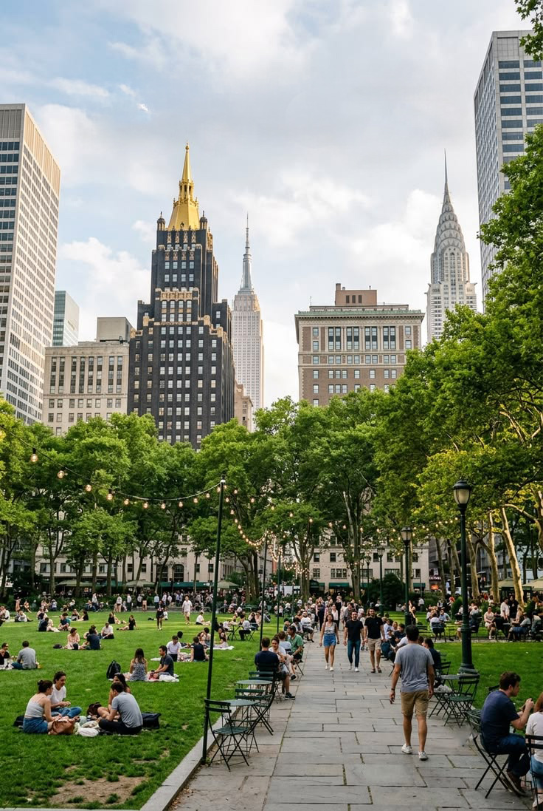
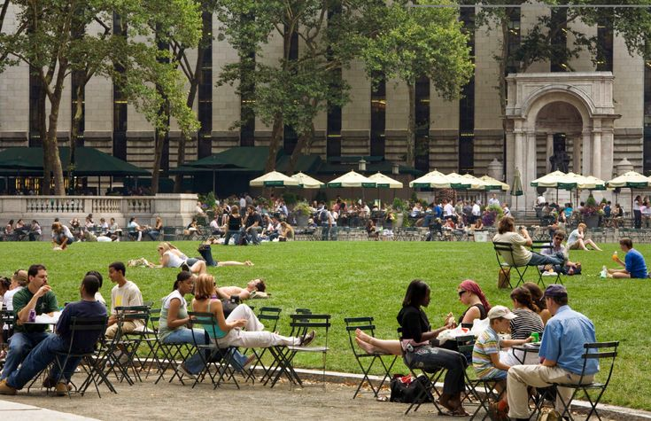
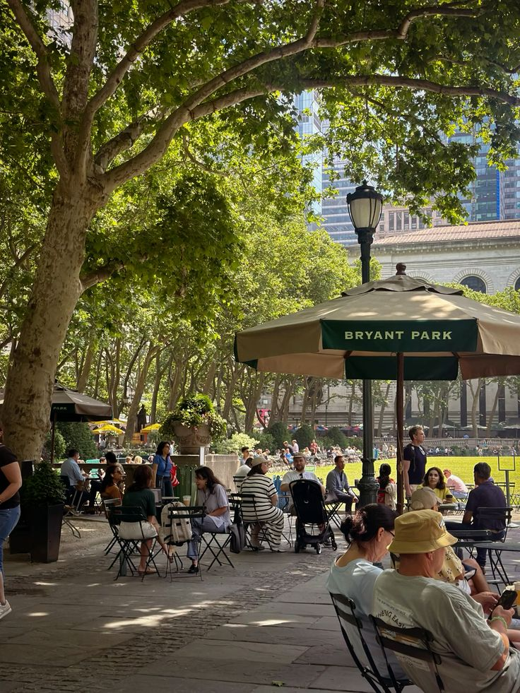

Urban Design
& Public Space
How People Use and Experience Public Space

Importance of Urban Design
As New York City continues to accommodate a large and diverse population within a limited physical area, urban design becomes increasingly important in shaping how people use and experience the city. Public spaces need to accommodate the diverse needs of residents, workers, and visitors. Well-designed open spaces can provide opportunities for people to gather, interact, and escape from the intensity of the urban environment while making more effective use of available space. From this perspective, thoughtful planning and design help manage the pressures of urban density and create a more functional and accessible environment for different users.
Design management that influences urban life
One example of NYC's urban design is Bryant Park in Manhattan, a relatively small public open space located behind the New York Public Library and surrounded by a highly active urban environment. The park demonstrates how the design and management of public spaces can influence how people use and experience the city. During the 1970s, Bryant Park faced problems that discouraged public use, including the presence of drug dealers and their customers. Subsequent changes to the park’s design and management sought to create a safer and more welcoming environment for a wider range of users, including nearby office workers and shoppers. This example illustrates a central role of urban design in New York City: when available space is limited, thoughtful planning and design can help accommodate different activities and provide places for people to gather, rest, and interact. In this way, urban design can help address some of the challenges associated with living in a dense and heavily used urban environment.

